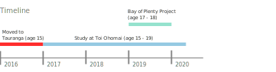

Hello. I’m Dayne (aka Dano). I moved down to Tauranga from Auckland in late 2016, with my Family, happily residing in Papamoa Beach. I dropped out of high school at age 15, to pursue a career in computer science. 2020 passed by and now I have my bachelor’s in applied information technology by the age of 19. I have done various projects for tech, and for personal use, and always willing to learn the next big thing. I have used various types of technologies from basic HTML & CSS websites to Full Stack MERN Applications, that I’m very proud of!
While learning and developing applications, I created a knack for designing my own applications, especially websites, as well as the websites that I built while I was at tech and have fallen quite in love with designing applications.
